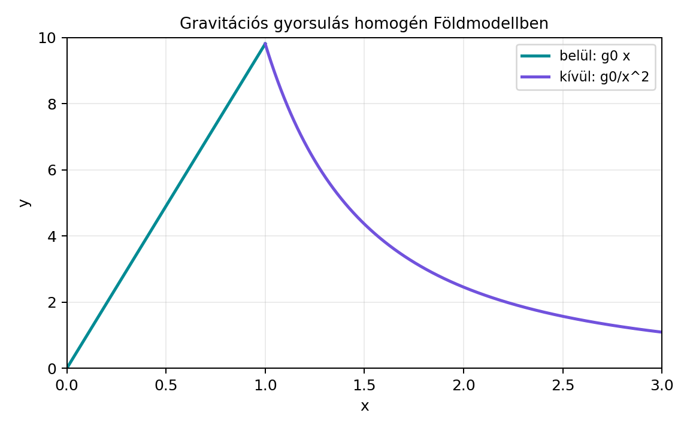

26.4 Alkalmazások: térfogat, tömeg,
gravitáció és elektrosztatikus tér
26.4.1 Motiváció
Egy mesterséges hold pályája, egy bolygó belső szerkezete, egy
nagyfeszültségű gömbkondenzátor tervezése: mind olyan kérdés, ahol a
tömeg vagy a töltés nem egy pontba koncentrálódik, hanem térbeli
eloszlásban van jelen. A hármas integrál éppen az ilyen folytonos
eloszlások összegzésének természetes eszköze: segítségével
kiszámíthatjuk egy test tömegét, súlypontját, tehetetlenségi nyomatékát,
sőt a keltett gravitációs vagy elektromos teret is.
A Föld belsejében a gravitációs gyorsulás nem állandó. A homogén
Földmodellben, ha egy bányában lefelé ereszkedünk, a gyorsulás csökken,
mert egyre kisebb tömegű belső gömb vonz bennünket. (A valódi Földben a
sűrű mag miatt a gyorsulás a köpenyben lefelé haladva előbb kissé nő, és
csak a magban csökken nullára; ezt a 6. feladatban vizsgáljuk.) A
felszín felett pedig a távolság négyzetével gyengül.

Gravitációs gyorsulás homogén
Földmodellben - A vízszintes tengelyen az r/R dimenziótlan távolság;
belül lineáris g(r) = g0 r/R, kívül g(r) = g0 R²/r². A diagram a
kiszámított modellgörbéket ábrázolja, nem mért adatokat.
Az ábra a homogén sűrűségű gömb modelljét mutatja: belül a gyorsulás
a középponttól mért távolsággal lineárisan nő, a felszínen eléri a
maximumot, majd kívül
szerint csökken.
26.4.3 Tömeg, súlypont és
tehetetlenségi nyomaték
Definíció. Ha egy
térfogatú test tömegsűrűsége
,
akkor
Definíció. A súlypont (tömegközéppont) koordinátái
az első momentumok és a tömeg hányadosai:
Definíció. Egy
tengelyre vonatkozó tehetetlenségi nyomaték
ahol
a
pontnak a tengelytől mért merőleges távolsága. A
-tengelyre
például
,
így
Példa (félgömb tömeg, súlypont, tehetetlenségi
nyomaték). Tekintsük az
,
félgömböt, állandó
sűrűséggel. Gömbkoordinátákban a tartomány
,
,
,
és
.
A tömeg:
A szimmetria miatt
.
A
-súlypont:
Így
A
-tengelyre
vonatkozó tehetetlenségi nyomaték:
Mivel
,
a tehetetlenségi nyomaték
Ez éppen a tömör gömb ismert tehetetlenségi nyomatéka; a félgömbre
ugyanaz, mert a
-tengelyre
szimmetrikus.
26.4.4 Newton héjtétele
A gömbszimmetrikus tömegeloszlások gravitációs tere különösen
egyszerű. Az alábbi tételt Newton héjtételének nevezzük.
Tétel (Newton héjtétele vékony gömbhéjra). Legyen
egy
sugarú, homogén
felületi tömegsűrűségű gömbhéj össztömege
.
Egy
tömegpont a héj középpontjától
távolságra:
ha
,
a héj által kifejtett gravitációs erő ugyanakkora, mintha a teljes
tömeg a középpontban lenne:
ahol
a középponttól a pont felé mutató egységvektor;
ha
,
akkor
.
Bizonyítási terv. A szimmetria miatt a gömbhéj által
a pontra kifejtett erőnek csak a pont és a középpont közötti egyenes
menti komponense marad. A héjat elemi gyűrűkre bontjuk, és az egyes
gyűrűk járulékát egyetlen szög szerinti integrállal összegezzük.
Az alábbi ábra a gyűrűkre bontás geometriáját és a járulékok
összegzését mutatja
mellett: külső pontra
()
minden gyűrű járuléka pozitív, és az összeg
;
belső pontra
()
a közeli kis gyűrűk és a távoli nagy gyűrűk járuléka ellentétes előjelű,
és pontosan kioltja egymást.
Statikus változat (mint a PDF-ben)
A héjtétel: gyűrűnkénti járulékok külső és belső pontra
(;
a görbe alatti előjeles terület
-nél
,
-nél
)
Bizonyítás. Helyezzük a megfigyelő pontot a
-tengelyen,
a középponttól
távolságra. A gömbhéj egy
irányú elemének területe
,
tömege
.
Az elem és a megfigyelő pont távolsága
A Newton-féle gravitációs törvény szerint az elem által kifejtett erő
nagysága
.
Ennek a
-tengely
menti komponense
,
ahol
az erő iránya és a
-tengely
között bezárt szög. A geometriából
A
szerinti integrálás
-t
ad, így
Vezessük be az
,
helyettesítést. Ekkor a belső integrál
Helyettesítsünk
-val:
,
,
;
a határok
-nél
,
-nél
.
Így
A felső határon
,
az érték
.
Az alsó határon
:
ha
,
az érték
,
tehát
;
ha
,
az érték
,
tehát
.
Összefoglalva
Ezért a teljes erő nagysága
Mivel
,
a külső esetben
a belső esetben pedig
.
A merőleges komponensek a forgásszimmetria miatt kiejtik egymást. ∎
Megjegyzés. Tömör, gömbszimmetrikus testet vékony
gömbhéjakra bonthatunk, ezért kívülről az egész test úgy vonz, mintha
teljes tömege a középpontban lenne; belül pedig csak a pontnál kisebb
sugarú belső gömb tömege számít.
Továbbvitt eredmény. Ez a héjtétel és annak
elektrosztatikus analógiája közvetlenül a A
Gauss–Osztrogradszkij-tétel (divergenciatétel) alfejezetben kerül
majd újra elő, ahol a gömbszimmetrikus mezők fluxusával ugyanezeket az
eredményeket kapjuk; az elektrosztatikus változatot a A Stokes-tétel és a Maxwell-egyenletek alfejezetben
is felhasználjuk.
26.4.5 Elektromos potenciál és tér
töltéseloszlásból
Az elektromos tér esetében a Coulomb-törvény ugyanolyan
-es
alakú, mint a gravitációs erő, ezért a héjtétel elektrosztatikus formája
is érvényes.
Állítás (Coulomb-integrál). Ha egy
tartományban a töltéssűrűség
,
akkor a
pontban az elektromos tér
ahol
a Coulomb-állandó. A skaláris elektromos potenciál pedig
A vékony, homogén töltésű gömbhéj a héjtételhez hasonlóan viselkedik:
kívül az elektromos tere ugyanaz, mint egy ponttöltésé,
belül pedig zérus.
26.4.6 Valós életbeli
alkalmazás
26.4.6.1 A gravitációs gyorsulás a
Föld belsejében
Tegyük fel, hogy a Föld homogén sűrűségű,
sugarú gömb, össztömege
.
A héjtétel szerint egy
sugarú belső pontban csak az
sugarú belső gömb tömege vonz, a külső héjak eredő ereje nulla. A belső
tömeg
A gravitációs gyorsulás nagysága
ahol
a felszíni gyorsulás. A felszín felett,
-re
viszont
A homogén modell tehát belül lineáris, kívül
-es
görbét ad; ezt mutatja az ábra.
26.4.6.2 Gömbkondenzátor
Egy gömbkondenzátor két koncentrikus vezető gömbhéjból áll: belső
sugara
,
külső sugara
,
a belső héjon
,
a külsőn
töltés van. A héjtétel elektromos változata miatt az
tartományban a tér olyan, mint egy
ponttöltésé:
A potenciálkülönbség:
A kapacitás definíciója
,
tehát
Például
,
esetén
Ez a nagyságrend valóságos laboratóriumi gömbkondenzátoroknál is
megfigyelhető.
26.4.7 Számolási recept
Ha hármas integrállal tömegeloszlási mennyiséget kell számolnod:
Válaszd meg a koordinátarendszert a test szimmetriája alapján
(derékszögű, henger-, gömbkoordináta).
Írd fel a
sűrűséget az adott koordinátákban.
Határozd meg az integrálási határokat, és szorozd be a megfelelő
Jacobi-determinánssal (henger:
,
gömb:
).
Számítsd ki a szükséges integrált: tömeghez
,
súlyponthoz
stb., tehetetlenségi nyomatékhoz
.
Súlypontnál oszd el a momentumot a tömeggel.
Ellenőrizd a mértékegységet, a szimmetriát és a határeseteket
(például
).
26.4.8 Tipikus hibák
A Jacobi-determináns elhagyása. Gömbkoordinátákban
sokan csak
-t
írnak, pedig
.
Ez hibás térfogatot ad.
Rossz távolság a tehetetlenségi nyomatéknál. A
-tengelyre
vonatkozó nyomatékban
szerepel, nem
;
az origótól mért távolság nem a tengelytől mért távolság.
A héjtétel félreértése. Gyakori hiba azt gondolni,
hogy a gömbhéj belsejében is
-es
a gravitációs tér; valójában ott az eredő erő zérus.
Coulomb-integrál nevezője. Az elektromos tér
integrálképletében a nevező
,
nem pedig a négyzete; a számláló vektorjellege is fontos.
Súlypont normálásának elhagyása. Az első momentum
kiszámítása után el kell osztani a tömeggel; különben nem a súlypontot
kapjuk.
26.4.9 Önellenőrzés
Homogén félgömb esetén
.
Mi indokolja, hogy a teljes gömb súlypontja a középpont?
Írd fel a
-tengelyre
vonatkozó tehetetlenségi nyomaték hármas integrálját egy tetszőleges
sűrűségű testre.
Vékony, homogén gömbhéj belsejében mekkora a gravitációs erő?
Mi történik a gömbkondenzátor kapacitásával, ha
?
Mi a geometriai oka?
A héjtétel bizonyításában miért csak a
-komponenst
integráljuk?
26.4.10 Feladatok
1. feladat (A). Egy
egységkocka sűrűsége
.
Határozd meg a kocka tömegét.
2. feladat (A). Egy
sugarú tömör gömb sűrűsége állandó
.
Számítsd ki a tömegét.
3. feladat (B). Egy
alapkör sugarú,
magasságú, homogén
sűrűségű egyenes körkúp csúcsa az origóban van, tengelye a
-tengely.
Határozd meg a tömegét és a
-tengelyre
vonatkozó tehetetlenségi nyomatékát.
4. feladat (B). Egy
belső,
külső sugarú,
sűrűségű vastag gömbhéj össztömege
.
A héjtétel segítségével add meg a gravitációs térerősséget a héjtól
kívül,
távolságban.
5. feladat (C). Bizonyítsd be, hogy ha egy test
sűrűsége szimmetrikus az
-síkra,
azaz
,
akkor a súlypont
-koordinátája
nulla (feltéve, hogy a tömeg véges és a súlypont létezik).
6. feladat (D). Modellezd a Föld belseji gravitációs
gyorsulását homogén gömbként. Számítsd ki a gyorsulást
mélységben, ha
és
.
Értelmezd, miért lineáris a modellben, és említs egy okot, amiért a
valódi Földben a görbe alakja ettől eltér.
26.4.11 Megoldások
26.4.11.1 Önellenőrzés –
válaszok
A teljes gömb szimmetrikus az origóra, ezért minden koordinátairányú
első momentum nulla; a súlypont a szimmetria miatt a középpont.
.
A gömbhéj belsejében a gravitációs erő zérus a héjtétel
szerint.
Ha
,
a kapacitás végtelenhez tart, mert a hézag vastagsága nullához tart,
ezért adott
töltéshez egyre kisebb feszültség tartozik
(),
azaz adott feszültségen egyre nagyobb töltés tárolható. (Ez a
síkkondenzátor
képletének megfelelője,
,
.)
A forgásszimmetria miatt a
-tengelyre
merőleges komponensek páronként kiejtik egymást, csak a középpont felé
mutató komponens marad.
26.4.11.2 Feladatok megoldásai
1. feladat. A tömeg:
A szimmetria miatt mindhárom változó integrálja ugyanaz:
2. feladat. Gömb térfogata
,
így
3. feladat. Hengerkoordinátákban a kúp leírása:
,
,
.
A tömeg:
A
-tengelyre
vonatkozó tehetetlenségi nyomaték:
Mivel
,
a nyomaték
.
4. feladat. A vastag gömbhéj vékony héjakra
bontható, és mindegyik héj kívülről ponttömegként viselkedik. Ezért a
teljes test is ponttömegként hat, tehát a térerősség
A belső üregben a tér zérus lenne, de itt csak a külső pontra
kérdezünk.
5. feladat. A súlypont
-koordinátája:
A feltétel szerint
páros
-ben,
míg
páratlan. A tartományt osszuk fel
és
részekre. A
-n
az integrál
helyettesítéssel éppen a
-n
vett integrál ellentettje, mert a sűrűség ugyanaz, a
előjele megfordul. Ezért a teljes integrál nulla, azaz
.
6. feladat. A homogén modellben
.
A lineáris összefüggéssel
A valódi Földben a sűrűség nem állandó: a mag sokkal sűrűbb a
köpenynél, emiatt a valódi
a felszíntől lefelé előbb kissé nő (a
összefüggés szerint, mert a felszíni sűrűség kisebb az átlagsűrűség
-ánál),
és csak a magban csökken, tehát a görbe nem lineáris; ráadásul a Föld
forgása és lapultsága is módosítja a mérést.
26.4.12 Rövid összefoglaló
A
tartomány tömegsűrűséggel adott teste esetén a tömeg
.
A súlypont koordinátái az első momentumok tömeggel osztott értékei:
,
hasonlóan
és
.
A
tengelyre vonatkozó tehetetlenségi nyomaték
,
a
-tengelyre
.
Newton héjtétele: vékony, homogén gömbhéj kívülről ponttömegként
viselkedik,
,
belül zérus. A Coulomb-integrál elektromos térre
.
Továbbvitt eredmény: a héjtételt és az elektrosztatikus
analógiát a A Gauss–Osztrogradszkij-tétel
(divergenciatétel) és a A Stokes-tétel és a
Maxwell-egyenletek alfejezetekben használjuk fel újra.
26.4.13 Források és ellenőrzési
hiányok
A klasszikus eredmények (Newton héjtétele, Coulomb-integrál,
gömbkondenzátor) standard kalkulus- és elektrodinamika-tankönyvekben
megtalálhatók, például Stewart, Marsden–Tromba, Griffiths. A fejezethez
felhasznált általános forráskiindulópontok (OpenStax, MIT OCW, Paul’s
Online Math Notes) hivatkozásai nem ellenőrzött, konkrét oldalszámú
források; a levezetések klasszikus, stabil tudáson alapulnak.